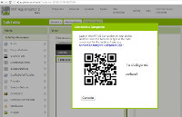
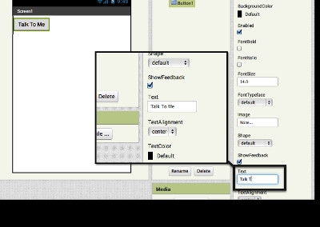
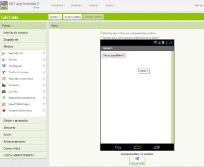
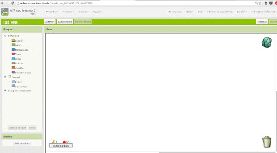
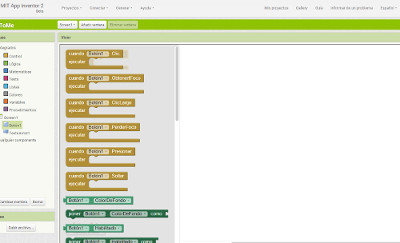
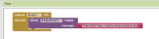

Aquesta guia pas a pas t’ajudarà a fer la teva primera App amb AppInventor. La guia original és en anglès i la podeu trobar aquí.
Cliqueu el botó taronja “Create Apps” a la barra de menús:
De fet, el vostre usuari i contrasenya @insvilafant.cat us serveix:
Trieu un compte Google si en teniu més d’un. Cliqueu després a “Allow”:


Si no teniu cap projecte creat a l’App Inventor, aterrareu a la pàgina “My Projects”:

En aquesta pàgina també podreu canviar l’idioma a “Español” si ho desitgeu.
Cliqueu el botó “Empezar nuevo proyecto”. Si ja en teniu de creats, l’App Inventor us obrirà el projecte més recent. Anomeneu el projecte “TalkToMe” (sense espais) i cliqueu OK.

La pestanya de disseny és des d’on creeu la Interfície Gràfica d’Usuari (GUI) o com es veurà la vostra app. Podeu triar components com botons, imatges i finestres de text i funcionalitats com text-a-parla, sensors i GPS.

Cliqueu la paraula “Botón” a la paleta. Arrossegueu el ratolí sobre el visor. Deixeu anar el ratolí. Us apareixerà un nou botó en el visor.

Aneu al Google Play Store i baixeu-vos el MIT AI2 Companion App. El podeu instal.lar en un mòbil o una tauleta que tingui sistema operatiu Android. Si ho baixeu directament del Google Play Store va millor perquè se us actualitzarà automàticament.

Si el vostre mòbil té una app per llegir codis QR, podeu escanejar la imatge de sota. Us portarà a la AI2 Companion app al Google Play store des d’on ho podreu clicar i instal.lar. Llavors trobareu l’app a la carpeta de Baixades del vostre dispositiu.

Si no teniu un mòbil o tauleta Android, encara podeu utilitzar l’App Inventor connectant-lo amb un emulador. Aneu a l’enllaç http://appinventor.mit.edu/explore/ai2/setup.html i seguiu les instruccions des d’on diu “Option 2” (en anglès).
Mentre construïu una app amb l’ordinador, la podeu provar en una tauleta o mòbil Android. Assegureu-vos que tant l’ordinador com el vostre dispositiu mòbil estan connectats a la mateixa xarxa WIFI.
Aneu a la finestra de disseny del vostre projecte i desplegueu el menú “conectar”. Trieu l’opció “AI Companion” (o Emulador, en cas de no tenir dispositiu Android). A la pantalla de l’ordinador us sortirà un codi QR i un codi de text amb 6 caràcters:

Obriu l’AI Companion app en el vostre dispositiu mòbil. Us sortirà una pantalla amb la opció d’escanejar el codi QR o entrar la el codi de 6 caràcters.
Si trieu d’escanejar el codi, premeu el botó blau “scan QR code”. Escanegeu-lo. Espereu pocs segons i s’obrirà la vostra app en el mòbil.
Si trieu utilitzar el codi, inserteu-lo en la finestra de text i cliqueu després el botó taronja.

Sabreu que la vostra connexió és correcta quan veieu la vostra app a la pantalla del vostre dispositiu mòbil. Com que la vostra app només té un botó, això és el que veureu. A mida que afegiu més components al projecte, l’app s’actualitzarà en l’ordinador i en el mòbil.

Al panell de “Propiedades”, canvieu el text del botó. A la capseta “Texto para Botón1”, esborreu-ho i poseu-hi “Talk to me”. Veureu que de seguida el text de la vostra app en el dispositiu mòbil també ha canviat de nom.

Aneu a l’apartat “Medios” de la paleta, i arrossegueu un component “Texto a Voz” en el visor. Fixeu-vos que apareix sota la pantalla, a “Componentes no visibles”. Això passa perquè no és quelcom que es mostrarà a la interfície d’usuari de la app.

Ara li heu de dir a la vostra app què voleu que faci. L’editor “Bloques” és des d’on programareu la vostra app. Sovint canviareu entre la pestanya “Bloques” i la pestanya “Diseñador”.

Si us fixeu en aquest panell hi ha blocs que tenen operacions matemàtiques, lògiques i text. A sota també hi ha blocs que van amb cada un dels components de la vostra app, per això, si voleu veure els blocs que van amb components específics, com és ara un botó, cal que primer l’afegiu a la pestanya “Diseñador”.
Cliqueu en l’objecte “Botón1”. Us apareixeran una sèrie de blocs de codi possibles. Cliqueu ara i arrossegueu el bloc:
cuando Botón1.click ejecutar Arrossegueu-lo sobre el visor i deixeu-lo anar. Aquest bloc s’executarà quan cliqueu el botó de la vostra app. Això s’anomena “Event Handler”.

Cliqueu l’objecte “Texto a voz”. Cliqueu i arrossegeu el bloc:
llamar TextoAVoz.Hablar
mensaje
Arrossegueu-lo sobre el visor i deixeu-lo anar allà. Aquest és el bloc que farà que el telèfon parli. Com que el deixem anar dins del “Botón1.click”, s’executarà quan el botó de la vostra app es cliqui.

Desplegueu “Texto” i trieu el primer bloc. Arrossegueu-lo dins del bloc anterior. Escriviu-hi a dins un missatge:

Aneu al vostre dispositiu mòbil i cliqueu el botó. Assegureu-vos que teniu el volum apujat. Haureu de sentir com el telèfon diu la frase que li heu introduït quan cliqueu el botó.
Podeu millorar la vostra app fent que el dispositiu mòbil parli quan el sacsegeu i deixant que els usuaris siguin els que entrin el seu propi text.